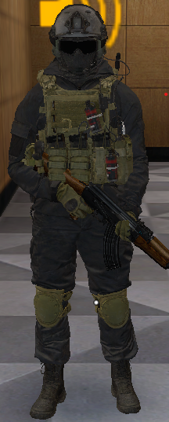
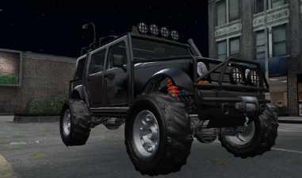

UNITED STATE MARSHAL
Avis de Recherche
Chers Citoyens(nes),
A ce jour, un avis de recherche a été mis en place à l’encontre du groupe suivant :
- Truskov
Description des individus :
- Adam Truskov, individu vêtu de tenues militaires.
- Jokan Truskov, individu vêtu de tenue militaire.
- Ils sont nomades, on les voit dans plusieurs endroits comme : hangar à côté de la pharmacie,
hangar au port et au quartier résidentiel.
Les faits reprochés sont :
- Prise d'otages
- Acte de terrorisme
- Tentative de meurtre sur haut fonctionnaire de l'état et police ;
- Possession d'armes lourdes
Les véhicules suspect sont :
- Le groupe “militaire” sont véhiculer de audi a4 jaune et 4x4 noir ( mesa )
Si vous apercevez des individus de cette organisation, contactez le plus rapidement possible un membre des
forces de l’ordre.
Cordialement,
U.S Marshal